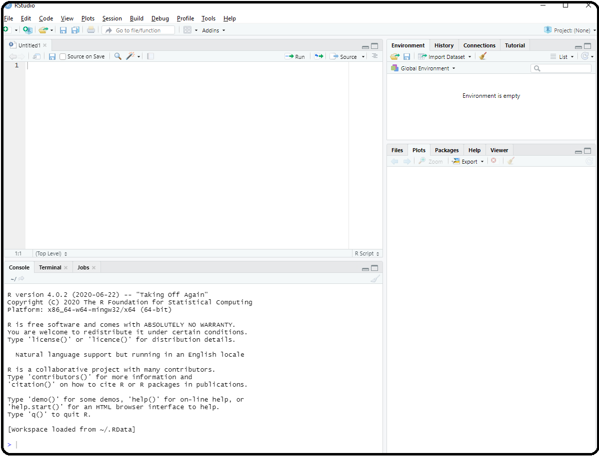
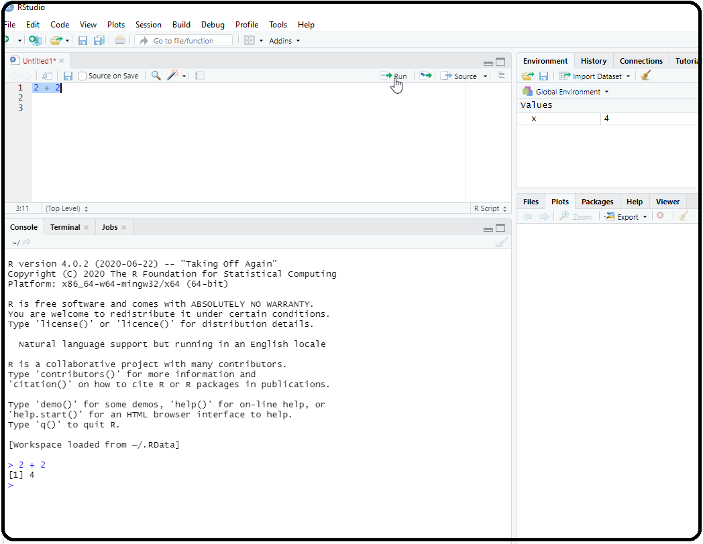
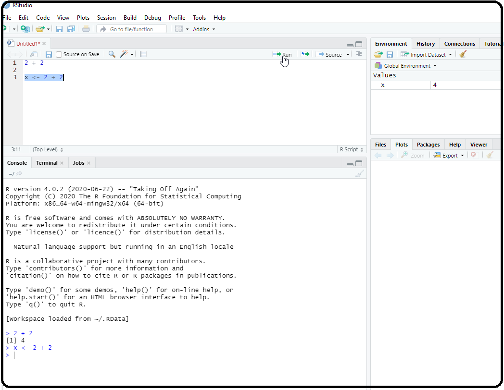

Code
25*10
5/2
2 + 2Anytime you open RStudio, we say we are in an RStudio session. After opening RStudio for the first time, you will see the RStudio interface, which consists of three panes. Next, open the script editor by selecting File > New File > R Script to make the script editor appear. RStudio should look something like what you see below but perhaps with different colors:

A brief description of each pane follows:
The upper left pane is the R Script file. This is where you will type in commands to be executed in the script editor. Writing and saving a series of R commands in the script file makes it easy to reuse or modify code at a later time.
The lower left pane is called the console pane. Every time you launch RStudio, it will have the same text at the top of the console telling you the version of R that you’re running. Below that information is the Rprompt (the symbol >). As its name suggests, this prompt is really a request, a request for a command. It is here where RStudio will tell R what to do. This is the most important pane because this is where R actually does stuff.
Upper right pane contains your environment/history pane.
Bottom right pane is the files/plots/packages/help pane.
To get familiar with R, it will first be used as a calculator. To get started, enter the 2 + 2 in the script editor. Once typed, highlight it and select the “Run” button (see image below)

Executing the command 2 + 2 only executes/runs the command in R. That is, RStudio was used to tell R to add two plus two, and R responded with 4 in the R console. It did not save the result, it simply evaluated 2 + 2.
If you want to save the result of 2 + 2 so that you can use it later, then we have to tell R to store the result by assigning the result to an object you can access later. Think of an R object as anything that holds/stores information (some data structure)
To assign the result of 2 + 2 to an object called x, type x <- 2 + 2 on a new line in the editor. Also, assign the result of 3+5 to an object called X. Then highlight these line and select “Run”.
Note that either = or <- may be used for assignments.

2 + 2 to an object called x
Note the following:
The R code x <- 2 + 2 translate to “assign the result of 2 plus 2 to an object called x”.
You can also see the new object x in the environment on the upper right pane.
R is case-sensitive! x and X are distinct.
Get into the habit of saving things in R objects so that they can be accessed at later time. As long as your RStudio session remains open, RStudio keeps any R objects that you defined in its memory.
Once you end your session, the R objects may be lost unless a saved workspace is restored. Is this a problem? Not if you save your script! You can run the script again in your next RStudio session to recreate the objects.
At its most basic level, R can be viewed as a fancy calculator. While we won’t be using RStudio do algebra problems, it is a good way to get familiar with RStudio.
Upon selecting “Run”, the result of the above appears in the console pane, preceded by the command you executed, and prefixed by the number 1 in square brackets [1]. The [1] indicates that this is the first (and in this case only) result from the command.
Many commands will return multiple values. Try the following one by one, where each is typed on a new line and then selecting “Run” after typing the command in the editor:
25*10
5/2
2 + 2>.
> prompt means that R is content and ready for a new command or input.5 / 2 is the same as 5/2. However, using spaces makes the code easier to read and catch mistakes.It’s always good practice to save your RStudio script. Edit the script that we have started to look like this:
### Name: Your-name-here
### File description: Some misc R code
2 + 2
x <- 2 + 2
25*10
5/2
2 + 2Next, save the RStudio script/file by selecting File > Save as. Save the text file as a .R file. Any RStudio script should be saved as a .R file.
There are many packages (also called libraries) that come installed with R or that can be installed to expand the ability of R. There are a few additional packages that need to be installed. The following packages are specifically designed to make R more accessible and easier for data analysis:
tidyverse: This package provides a collection of R packages designed for data science. Functions from these packages will be utilized for aspects of importing data and data management.
mosaic: This package provides a number of functions that make some basic data analysis tasks easier.
To install these packages, in the R console type the following command:
install.packages( "tidyverse" ) # no spaces within quotation marks!Hit enter. Activity will start occurring in the R console. This may take a few minutes to complete. During the installation process, if R requests that + a CRAN mirror be selected for downloading, any USA mirror will do. + the personal library on your computer be used, answer yes. This ensures that admin privileges are not required for installation. + packages be updated, please agree to the updates.
When it is done installing, check the R console for error messages. To check that the package is ready to use, type library(tidyverse). Now repeat the same steps for the package mosaic, using library(mosaic) to check it. Again, this may take a few minutes to complete.
Alternatively, you can select Tools from the RStudio menu, followed by Install packages. Enter the name of the R package under “Packages (separate…)” and click “Install”. Activity will then start occurring in the R console as when using install.packages().
R packages will only have to installed once on the computer that is being used. However, once the package is installed, you will have to load it into the workspace (R’s memory) before it can be used every time you start a new RStudio session. If you are using a different computer, you will have to install these packages again.
To load a package, run the command library(package-name). For example. to load the mosaic packages, run the following in R:
Some things to remember when using RStudio:
Always use an R script (a .R file) to save your work.
R is case-sensitive!
Does the code in the R console keep going and going and…? Hit the Esc key once or twice!
If you see a + prompt in the R console, it means the console is waiting for more input.
Comment your code using #. It’s amazing what you can forget quickly.
You are expected to look back at the appendix or other segments in this resource if you forget something along the way, as you would for any other software that you are starting to learn.
Some sections will contain examples or templates of how to do certain analysis. Your job will primarily be to edit the templates to reflect the data that you are working with.
Getting an error message? An online search for the error message will be useful.
B.3 Comments
Everything that is typed after a
#sign is assumed to be a comment and is ignored by R. Adding comments to R scripts is useful because it will help one recall what the commands or lines of code does. In the editor, type the following and select “Run”:Code
Note that
yis now in RStudio’s memory, and its value can be accessed by typing y on a new line and selecting “Run”. Now, type the following in your editor on a new line and then select “Run”:Code
Note that this code ignored because of
#. Get into the habit of using comments!